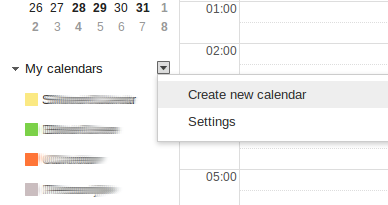
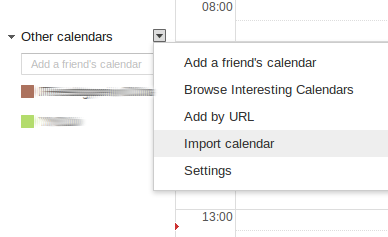

ICal import instructions
Your iCal is being generated and will be available for downloaded in an instant through the link below.
To use the file, you probably want to create a new Calendar and import the file there. In Gmail, this is how you would do that:
- First create a new calendar by clicking the Create new calendar link next to the My calendars heading. Name it and set the settings as you wish.
- Then click the little arrow next to the Other calendars link and select Import calendar. Now chose the iCal file you downloaded. Gmail should add all the events to the calendar.
 Generating iCal...
Generating iCal...